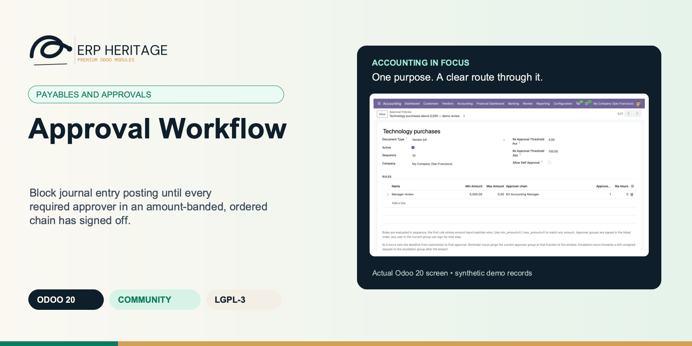
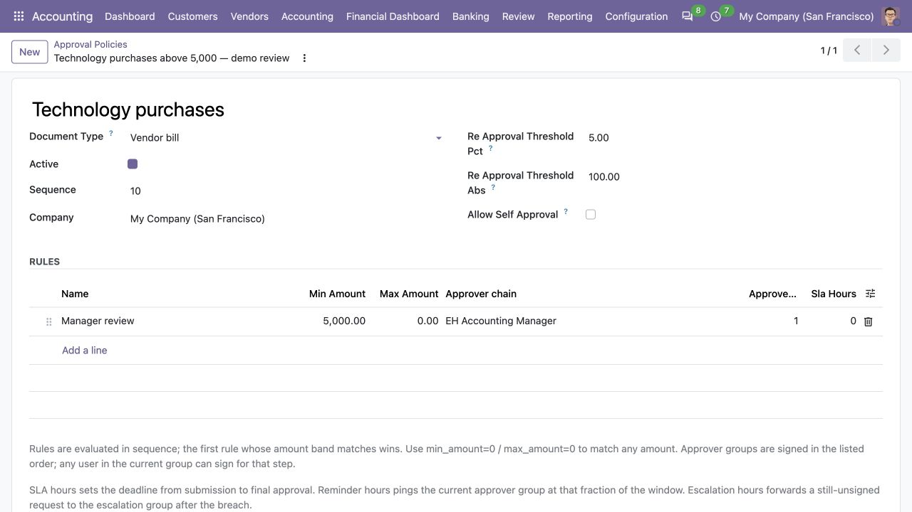
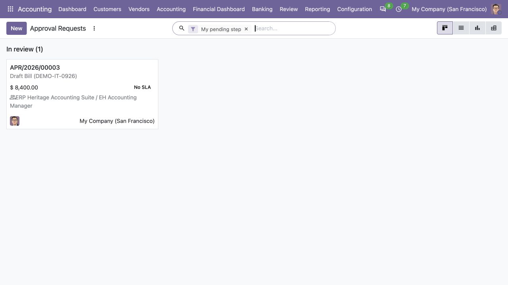
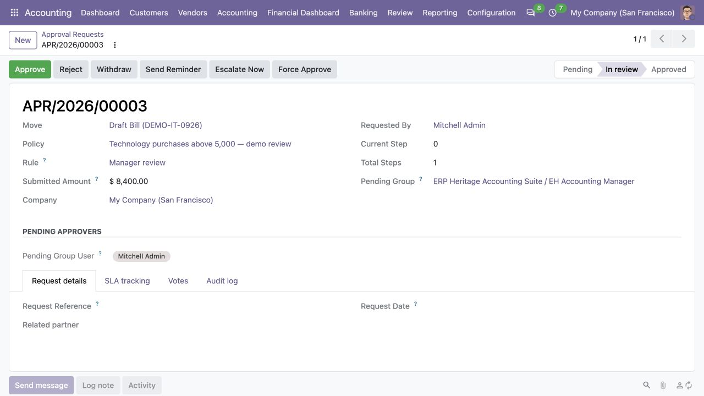

ERP HERITAGE / ODOO 20 COMMUNITY
Block journal entry posting until every required approver in an amount-banded, ordered chain has signed off.
LGPL-3 · Odoo 20 · v20.0.1.2.9 · Module guide, setup, workflows and rollout checks
The purpose
Approval Workflow is the corporate spend control most Community accounting stacks skip: a configurable approval chain that blocks journal entry posting until a defined set of approvers has signed off.
Inside Odoo 20
Captured from Odoo 20 Community using synthetic demonstration records. Configuration screens show the available workflow; external service connectivity still requires the relevant provider setup and validation.

Vendor-bill approval policy defines a threshold rule, reviewer group and reapproval tolerances.
Captured 2026-09-22 from isolated Odoo 20 Community database with synthetic demonstration records. No external submission or live banking activity is represented.

Approval workbench shows the synthetic vendor-bill request currently in review.
Captured 2026-09-22 from isolated Odoo 20 Community database with synthetic demonstration records. No external submission or live banking activity is represented.

In-review request exposes the submitted amount, current step and pending approver before a decision.
Captured 2026-09-22 from isolated Odoo 20 Community database with synthetic demonstration records. No external submission or live banking activity is represented.
Inside this module
The gate sits on the journal entry post pipeline, before sequence numbering and reconciliation fire. Until the chain reaches approved, the move cannot post, and the block names the exact policy, pending group, and step that stopped it. No half-posted, gap-numbered moves slip through.
Two approvers clicking at once cannot both advance a step: an atomic compare-and-set with a stale-step guard lets one win and hands the other a clean retry. Every transition lands on an append-only log whose fields are immutable and whose deletion is refused at the model level.
Per-rule SLA hours compute a due time and an on-track, at-risk, or breached state. An hourly cron posts chatter and queues the shipped email reminder and escalates a breached request exactly once to a configured group, with per-record database savepoints and error isolation so one bad rule cannot stall the batch. The full lifecycle is covered by tests.
The post-time gate runs before upstream posting, so sequence numbering and reconciliation side effects only fire after approval. You never get a half-posted, gap-numbered move that approval later has to unwind.
Two approvers in the same group clicking approve at the same instant cannot both advance the step. A raw SQL compare-and-set with a stale-step guard lets one win and gives the other a clean retry, and the race is covered by a regression test.
Step order is pinned to an explicit sequence column, not the approver group's primary key. Creating or deleting unrelated security groups never silently reorders an in-flight approval chain.
The re-approval threshold has both a percentage and an optional absolute floor, so a large-percentage but tiny-absolute change can be exempted from re-signing while a genuinely material change still rolls the request back to step zero.
Re-approval is enforced on a plain write, not just on edit-and-post. Editing a watched field on a draft move that already had an approved request silently resets the request and posts a chatter note, so the next post attempt blocks.
From input to outcome
Define the approval policy and group membership for the relevant bill and journal-entry scenarios. Gather document type, amount bands, approval policies, ordered groups, company and escalation settings. Use a representative case with a known expected result so the team can separate configuration decisions from unexpected behaviour. Keep the supporting commercial or accounting evidence available during review.
Submit a representative document and follow the required sequence, checking how approvers receive and complete their work. Follow the record’s available actions in the order intended by the workflow. Review the selected company, relevant dates and any validation messages before continuing. If the source data changes, reassess the result against the updated evidence.
A bill arrives for ninety thousand. The amount-band policy routes it through three ordered steps: manager, then director, then CFO. Each approver sees a To-Do activity land in their personal inbox as their step comes up, and any eligible named, group, or injected approver can sign off to advance. Two managers happen to approve in the same second; the atomic step pointer lets one through and quietly hands the other a retry, so the chain never double-advances. With all three signatures in, posting is allowed and the move posts cleanly. Later an AP clerk opens the still-draft move and bumps a line, pushing the total past the configured material threshold. Because the change clears both the percentage and the absolute floor, the approved request silently resets to step zero and a chatter note records why, so the next post attempt is blocked until the chain re-signs. Meanwhile a separate request has sat unsigned past its SLA window: the hourly sweep marks it breached, posts a reminder, and escalates it once to the configured group, never storming it on the next pass.
Change a material field in a test case and review the effect on prior approval before trusting the posting control. Compare the outcome with the expected treatment for this case and record the reason for any difference that requires follow-up. Give exceptions an owner so they do not disappear inside a period-end spreadsheet.
Assign policy maintenance and overdue approval follow-up to a process owner and retain decision evidence with the financial document. Include the accepted operating example, configuration choices and unresolved dependencies in the handover. Review them when business policy, source data or the surrounding Odoo applications change.
Business situations
Approval Workflow is relevant to financial controllers and designated approvers who need to answer this question: Has the current financial document received the required approvals before posting? Start with the process that creates the decision, identify its owner and agree what evidence the reviewer needs. A narrow pilot helps the team evaluate the supported workflow using its own accounting data before broadening access.
Use the module’s payables and approvals role as one part of a controlled close. Bring the relevant document type, amount bands, approval policies, ordered groups, company and escalation settings to the review, then explain the result alongside the business event it represents. Establish which outputs become part of the reporting pack and which outstanding matters need a separate accounting decision.
Turn the business question into an acceptance case: Has the current financial document received the required approvals before posting? Use one ordinary example and one relevant exception from the supported scope below. Ask the intended operator to prepare it and the reviewer to explain the result. Retain that accepted example with the deployment notes so future changes can be assessed against an understood process.
Before the first result
Confirm that the organisation needs the supported payables and approvals process described here. Identify the responsible financial controllers and designated approvers and write down the decision they expect the module to support. Use the limitations section to separate shipped behaviour from an integration, professional judgement or operational service that needs another owner.
Prepare document type, amount bands, approval policies, ordered groups, company and escalation settings. Check the relevant records in the intended company and use dates that match the business event. Resolve missing accounting configuration before evaluating calculated output; plausible-looking totals do not establish that the chosen inputs or policies are correct.
This module declares Accounting Suite Base as part of its installation foundation. Its direct standard-Odoo dependencies are account, mail. Review the actual dependency set in the target database before a rollout, especially where another addon also extends the same accounting models, menus or posting actions.
Define who operates Approval Workflow, who reviews unusual results and who maintains configuration. Run the representative workflow below in a test database using the intended users. Confirm that users can reach the work they own and that the reviewer understands the available evidence before moving the process into live operation.
Workflow reference
Amount-band policies. One policy per company and document type, with ordered rules. Currency-rounded boundaries select the matching rule. Exact branch policies take priority and accounting-root policies provide a controlled fallback.
Multi-step ordered approvals. A step may name users, use group members, or require an N-of-M quorum across both sources. Submission seals the eligible-user snapshot and refuses an unattainable quorum. Steps run top-to-bottom in explicit sequence order, so unrelated security changes never silently reorder an in-flight chain.
Atomic step transitions. Advancing the current step uses a raw SQL UPDATE with a stale-step guard, so two concurrent approvers in the same group can never both advance the request from step N to N+1. One wins, the other gets a clean retry. This race is covered by a regression test.
Post gate. The journal entry post pipeline is gated: when a matching policy applies and the request is not yet approved, posting raises with a message that names the policy, the pending group, and the step. The gate runs before upstream posting, so sequence numbering and reconciliation side effects only fire after approval, with no half-posted, gap-numbered move.
Re-approval on material change. A material amount change after full approval rolls the request back to step zero and requires every step to re-sign. The material threshold is a percentage with an optional absolute floor, configurable per policy, so a large-percentage but tiny-absolute change can be exempted. The watched edit fields are a fixed set (lines, amounts, currency, partner); edits while approval is still in progress are not gated.
Append-only audit log. Every transition (submitted, approved, rejected, withdrawn, restarted, reset, invalidated, escalated, completed) lands as an immutable row with actor, timestamp, and comment. Writes and deletion are refused at the model level.
SLA and escalation. Each rule can carry an SLA target in hours that computes a due time and an on-track, at-risk (at eighty percent of the window consumed), or breached state. An hourly cron posts chatter, queues the shipped email reminder, and performs one-shot auto-escalation to a configured group. The request-local escalation grants that group authority to sign the open step without mutating the policy snapshot. Escalation is idempotent, and each request runs inside its own database savepoint so one SQL failure cannot abort the batch.
Reject, withdraw, restart. Any approver in the pending group can reject the request (terminal). The requester or an accounting manager can withdraw the whole request. Withdrawn or rejected requests can be restarted from step zero.
No silent fallbacks. A missing policy, a missing matching rule, and an approver acting outside the pending group each raise an explicit message naming the bad config.
Activity-driven notifications. Each new step schedules a To-Do activity for every eligible active named, group, and injected approver. SLA reminders also queue the shipped email template.
A breached request is escalated exactly once. A last-escalated guard stops the hourly cron from storming the escalation group on every pass.
The SLA sweep runs each request inside its own database savepoint, so one bad rule (a deleted group, a missing field) logs a warning instead of aborting the whole batch.
One policy per company and document type, with ordered rules. An amount band selects the named, group, and N-of-M evidence required for each step, and first-match rule routing picks the band that applies.
Each step seals named and group-derived eligible users and may require an N-of-M quorum to advance. Steps run in the policy's sequence order, pinned to an explicit sequence column so unrelated group changes never reorder a live chain.
Advancing the current step uses a raw SQL UPDATE with a stale-step guard, so concurrent approvers cannot both advance the same step. One wins, the other retries cleanly.
A matching policy blocks the journal entry post pipeline until the request reaches approved, with an error that names the policy, the pending group, and the step. The gate runs before upstream posting.
A material amount change after full approval rolls the request back to step zero. The threshold is a percentage with an optional absolute floor, configurable per policy; the watched edit fields are a fixed set.
Every transition (submitted, approved, rejected, withdrawn, restarted, reset, invalidated, escalated, completed) lands as a row with actor, timestamp, and comment. Rows are immutable and deletion is refused at the model level.
Per-rule SLA hours compute a due time and an on-track, at-risk, or breached state. An hourly cron posts chatter and queues the shipped email reminder and performs one-shot auto-escalation to a configured group, with per-record database savepoints and error isolation.
Any approver in the pending group can reject (terminal). The requester or an accounting manager can withdraw the whole request. Withdrawn or rejected requests restart from step zero.
Each new step schedules a To-Do activity for every eligible named, group, and injected approver, surfaced in their personal activity inbox and kanban.
The currently-effective approval request for this move. Empty when no policy applies, no request exists, or the request was withdrawn / rejected.
True when a policy applies to this move and the approval is not yet complete. Used by the form to surface the Submit for approval button.
Required for journal-entry policies. The policy can govern only entries in these explicitly selected journals; an empty scope never catches payments, bank statements, reversals, or entries created by another accounting engine.
Journal-entry policies must state which persisted accounting origin they cover. 'All origins' is an explicit opt-in and is still limited to the selected journals.
When a partially approved move's amount changes by more than this percentage, the approval request resets and every step must re-sign. Default seeded from the company's Heritage settings.
Optional absolute floor for re-approval. A change of less than this amount never triggers re-approval, even if it exceeds the percentage threshold. 0 disables the floor.
When off (the default), the user who submitted a request cannot approve or reject it, even if they belong to a pending approver group. Segregation of duties: someone else must sign. Turn on only for single-operator companies that accept self sign-off.
Upper bound of the amount band (inclusive). Use 0 for no upper bound; the rule then matches any amount at or above Min amount.
Sequential: steps are signed in order, one after another. Parallel: every step is open at once and the request is approved when all steps are satisfied.
Ordered approval steps. The request walks the steps one at a time, top to bottom; any user in the step's group can sign off to advance the request. The step sequence is the single source of truth for order, so creating or removing unrelated security groups in the system never reorders the steps of a rule already in use.
Service-level target in hours from request submission to the final approval. Zero disables SLA tracking for this band. The cron uses this value to compute Due at and to send reminders before the deadline.
Send a chatter ping to the current approver group when this many hours of the SLA have elapsed. Zero disables the pre-deadline reminder. Reminders are idempotent per step; a subsequent run will not double-post.
When the SLA breach exceeds this many hours past Due at, the cron promotes the request to the escalation group. Zero disables auto-escalation; in that case the breach is logged but the queue stays with the original group.
Group the request is escalated to after the breach window expires. Leave empty to disable escalation; the cron will still post a chatter warning so the requester sees the miss.
Position of this step in the approval chain. The request advances through the steps in ascending sequence; ties break on record id. This column is the only thing that decides step order, so it cannot drift when unrelated security groups are created or removed elsewhere in the system, even for a request already in review.
Any user in this group can sign off when the request reaches this step. Optional when named approvers or manager injection are configured instead.
Specific users who may sign this step, in addition to any group members. Use for per-person routing rather than a broad security group.
Approvers who MUST sign before this step advances, even if the minimum count is otherwise met. Must be a subset of the eligible approvers (named approvers or group members).
Minimum number of distinct approvals before the step advances (N-of-M). Default 1 = any single eligible approver. The required approvers always count toward and must be included in this minimum.
When set, the HR manager of the user who submitted the request is added as an eligible approver for this step.
Escalation group currently authorised to sign an open step. Set only by the SLA engine and cleared on every restart or re-approval cycle.
Open approval requests on invoices/bills for this partner. Pending and in review states count; approved, rejected, withdrawn and archived do not.
Illustrative implementation exercise. A vendor bill is approved and then someone changes a material amount or accounting detail before posting. Use this situation as an acceptance case for the policy: the organisation needs an approval of the current document, not merely a historic green status. Inspect how the required request and decision evidence relate to the changed document. Walk a second example through more than one approval band and group. Include an overdue request to review the supported escalation and reminder path. Assign policy maintenance to a finance owner and verify the actual posting gate with the intended users; hiding a button alone is not the control being evaluated.
Questions before rollout
It is designed for financial controllers and designated approvers. Its central business question is: Has the current financial document received the required approvals before posting? The listing describes the shipped operating scope and the decisions that remain with the organisation. Evaluate it against your own records and review process, rather than treating the module name as a promise to cover every scenario in that accounting area.
Have document type, amount bands, approval policies, ordered groups, company and escalation settings ready, together with the person who owns the related accounting policy. Define the approval policy and group membership for the relevant bill and journal-entry scenarios. A known example makes it possible to check the result and resolve configuration questions before the process is repeated across more records or companies.
Change a material field in a test case and review the effect on prior approval before trusting the posting control. Keep the relevant source evidence with the output and be explicit about company, date and policy choices. The most useful review asks whether the result follows from the business inputs, not only whether the operation completed without a validation message.
It belongs to the payables and approvals family. Its declared custom dependency foundation is Accounting Suite Base. Installing the complete suite also brings other operating and specialist modules; using this focused module should be evaluated against its own dependency list and scope. Optional services still need their own configuration and agreement where applicable.
Withdraw and restart operate on the whole request; there is no per-signature un-approve action. Assign policy maintenance and overdue approval follow-up to a process owner and retain decision evidence with the financial document.
No. Approval Workflow provides the specific records, calculations or workflow described in this listing. The organisation remains responsible for its source information, accounting choices, supporting evidence and review. Where the process uses an estimate, a contract assessment or an external service, appoint the appropriate owner before relying on the output.
Scope and requirements
Withdraw and restart operate on the whole request; there is no per-signature un-approve action.
Material re-approval uses currency-rounded amount changes and configured percentage and absolute thresholds; watched business fields remain fixed in code.
Step eligibility is sealed at submission. Later user or group membership changes do not rewrite historical eligibility evidence.
Cron reminders use chatter and the shipped queued email template; outbound delivery still depends on the Odoo mail queue and mail-server configuration.
Standards references describe the accounting subject addressed by the module. They do not establish certification, statutory filing acceptance or suitability for every jurisdiction. Your finance team owns its assumptions, accounting policies and review.
Installation scope
Odoo installs the following direct dependencies automatically. Additional dependencies can be brought in by those modules. Related modules in the wider catalogue are optional unless they appear in this dependency chain.
Shared reporting engine for the ERP Heritage Odoo 20 Community accounting suite, providing a reproducible report-execution audit log and a move-version result cache. Append-only audit log of every report render with user, timestamp, the full options snapshot, runtime, and a SHA-256 result hash for XLSX and PDF output, plus a multi-company analytic-aware parameterised SQL builder with no raw user input in SQL, a three-tier User/Manager/read-only Auditor privilege model, and a currency-aware XLSX writer. Odoo 20 Community accounting reporting engine, reproducible financial report audit trail, move-version report cache invalidation, multi-company parameterised SQL builder, append-only audit log, read-only auditor role, SHA-256 report hash compliance, currency-aware XLSX export, analytic-aware journal item aggregation.
Included dependency: eh_account_base. The shared reporting engine under the ERP Heritage accounting modules: an append-only render audit log, precise per-company cache invalidation, and a whitelist-only parameterised SQL builder.
Odoo Community dependency required by this module. Its own dependencies and configuration remain part of the installation scope.
Odoo Community dependency required by this module. Its own dependencies and configuration remain part of the installation scope.
Acceptance guide
The following are recommended rollout checks, not claims of additional built-in features. Apply the checks relevant to this module and retain evidence of your own results.
Select a recent, closed period that your finance team understands well. Keep its approved source documents, ledger totals and existing working papers available. Reproduce that period in a staging database before working on current transactions. A familiar period makes differences visible: you can distinguish an opening balance problem from a configuration choice, a timing difference or a genuine defect. Agree which person owns each discrepancy and what evidence will close it. Successful installation is the starting point; a repeatable business outcome is the acceptance criterion.
Write down the output your team needs from this module: a reviewed transaction, an exported file, a reconciled balance, an approved schedule or an operational queue. Identify who prepares it, who reviews it and who relies on it next. Make the scope concrete with one company, one reporting period and a small representative document set. Include an ordinary case and an exception. This keeps the evaluation focused on the business decision instead of the number of available screens, and gives reviewers a consistent way to compare the new workflow with their current process.
Use the Odoo 20 edition of the module and its dependencies together. The manifest defines what Odoo installs automatically; a feature mentioned elsewhere in the wider product family is not automatically included. Review the dependency guide on this page before enabling the complete suite, especially where your deployment also uses Sales, Purchase, Inventory or website components. Confirm that your hosting arrangement accepts custom server modules and their Python requirements. Keep a copy of the installed module versions with your acceptance record so a later update can be checked against the same baseline.
Check the companies, currencies, fiscal periods, journals, accounts and partner records used by your sample. Confirm that account purposes agree with your chart of accounts and that archived records are not being selected inadvertently. Review company-specific settings while the intended company is active. Where a workflow needs bank details, analytic dimensions, product information or payment terms, validate those inputs with their owner. Clean master data reduces repeated exceptions and makes it easier to investigate the exceptions that remain. Keep the preparation list short enough for someone else to repeat it.
Decide which source establishes the opening position before introducing new transactions. Save the source date, company, currency and supporting reconciliation. If a module maintains a schedule or a working-paper balance alongside the ledger, document how that opening amount should tie to the general ledger. Do not use balancing entries to hide a difference during the pilot. Classify the difference, correct its source and rerun the comparison. The resulting trail is useful both for your internal reviewer and for support if an unexpected calculation needs investigation.
Choose named users for preparation, review and administration. Confirm their practical access by signing in as those users in staging, rather than relying on an administrator's view of the menus. A visible menu does not replace model access or record restrictions, and a hidden menu does not by itself prove that data is protected. For your own acceptance check, verify the specific business operations each role needs. If your organization requires separation of duties, include that policy in the rollout criteria and check the actual workflow against it before granting production access.
Run the sample with the intended company selected, then repeat the relevant navigation and search checks as a user assigned to a different company. Record which company owns each source document and each generated result. For users who work across entities, confirm how their allowed-company selection affects totals and available records. Investigate any cross-company difference before it becomes a month-end problem. Group-level work and company-level work have different scopes; use the appropriate module and document the scope on the review evidence instead of assuming one screen represents both.
Include a company-currency case and, where relevant to the module, a foreign-currency case. Check the date used to select exchange rates and keep the rate source available to the reviewer. Add a transaction near a period boundary so the team can see whether document date, accounting date or another business date drives the result. Test decimal precision with a small amount as well as a large one. Record the expected rounding treatment. These checks turn vague differences in totals into questions that can be resolved against your accounting policy.
Choose one result and follow the available links or record references back to the original business document. Compare its company, partner, amount, currency and dates with the expected source. Where the workflow creates a journal entry, inspect the accounts and balancing lines before relying on an aggregate report. Where it exports a file, compare the file's records with the selected batch. Save a small, intelligible evidence set instead of an indiscriminate screenshot archive. A reviewer should be able to explain what happened without needing the original preparer beside them.
If this module creates or updates accounting entries, separate preparation from the decision to post in your operating procedure. Inspect the proposed outcome, resolve missing configuration and confirm the intended period before using a posting action. If the module does not post entries, identify the equivalent commitment point, such as sending a file or approving a review record. Record who is allowed to make that decision. The page describes the module's supported workflow; your team still needs an operating policy that fits its accounting responsibilities and approval structure.
From pilot to production
Use a deliberately incomplete sample in staging: a missing required setting, an unsuitable date or a source document that is not ready for the next step. Observe the actual message and the record state that remains. Correct the input and repeat the operation. Check that the recovered result agrees with the ordinary successful case. For transactions already committed, use the supported correction or reversal workflow rather than editing database records. Your acceptance record should explain how staff recover from mistakes, because that is part of day-to-day usability, not an unusual administrative task.
Repeat an import, calculation, preparation step or button action only where the documented workflow permits it. Confirm whether the expected behavior is a recalculation, a refusal, a new version or reuse of an existing record. Do not infer universal duplicate prevention from one successful test. Record the behavior of the actual operation your team will use and include it in staff guidance. A small, identifiable sample makes duplicate records easy to spot and avoids creating a misleading acceptance result from a large batch with poorly understood contents.
Where accounting dates are involved, inspect your company's lock settings and the role that can change them. Include one sample dated inside a closed period and one in the open period, then observe the supported behavior with normal finance access. Agree how the team will handle late documents and approved corrections. The goal is a clear route for legitimate work that preserves the reason the period was closed. Record the policy alongside the module's workflow so operators know when to stop and involve the person responsible for the close.
If the module produces reports or exchange files, have the intended recipient inspect a sample. For a finance report, check the filters, company, dates, currency, labels and totals. For a bank or service file, use that recipient's own validation or test process before a production submission. Generating a structurally valid file does not establish acceptance by every provider. Keep the exact sample and any recipient feedback with the rollout record. Where no export is provided, agree which supported screen or linked record serves as the handover evidence.
Identify any step that depends on a separately configured provider, connector, credential or commercial service. Confirm the exact adapter and its requirements before scheduling a live demonstration. Some family modules provide deterministic rules or file preparation without a live external connection; their usefulness should be evaluated on that basis. Test a provider failure in staging only when the adapter offers a safe test route. Make it clear who manages credentials and provider subscriptions, and who should be contacted when an external service is unavailable.
Time the operations your staff will actually repeat, using a dataset that resembles your expected company, date range and document volume. Record the environment and sample size beside the timings. Include navigation, filtering, preparation and review rather than quoting a single best-case page load. This page makes no universal performance promise: network latency, database size, customizations and infrastructure affect results. Use measurements to choose a practical rollout batch size and to identify any operation that needs investigation before more users join the workflow.
Give staff a short exercise that begins with a business situation and ends with a reviewed result. Include the expected amount or state, the navigation route, the point at which a reviewer becomes involved and the supported correction route. Let operators explain why their result is correct. Add only the settings and exceptions relevant to their role. A concise internal playbook built from your own pilot is easier to maintain than a large collection of unannotated screenshots, and it helps new users understand the relationship between this module and the rest of Accounting.
Capture the module version, Odoo version, affected company, operation, exact message and a minimal sequence of steps. Use redacted sample documents when sharing evidence outside your organization. State the expected result and the actual result separately. Include the date filters and role used, because the same record can look different with another scope or set of permissions. Never include passwords, API tokens or private keys in a support message. Good reproduction details allow the problem to be investigated without guessing at your business setup or asking staff to repeat a full close.
Before deploying an update, back up the database and filestore together, and restore that backup into an isolated environment. Apply the module update there, then repeat the key pilot scenarios using the saved acceptance record. Check that existing documents remain readable and that the expected actions and menus still lead to the right workflow. Include one newly created record as well as an older one. Keep a rollback plan appropriate to your deployment and confirm that the backup can be restored before scheduling the production change.
Agree the release criteria before the pilot ends: expected financial results, access boundaries, supported corrections, output acceptance and owner sign-off. List unresolved items with their business impact instead of treating every observation as a blocker or dismissing it as cosmetic. Start production with a manageable scope and a named reviewer. Keep the first cycle's evidence so that later enhancements can be assessed against a concrete baseline. App-store descriptions help you select and understand the module; acceptance in your own configuration establishes whether the workflow is ready for your team.
Connected capabilities
These related modules explain how this workflow connects to the wider accounting process. Only the dependencies declared above are installed automatically. Choose optional additions for a specific business need.
A vendor bill intake pipeline that takes routine bills off the manual key-in queue while keeping every posting under human control.
The shared engine that powers the ERP Heritage accounting modules for Odoo 20 Community. It auto-installs as a dependency of any ERP Heritage accounting module, so you do not need to install it by hand.
ERP Heritage Community Accounting Pro installs a fixed collection of 50 direct accounting dependencies. Together with the suite itself and the transitive EH EDI Core foundation, its custom-module closure contains 52 modules. The collection brings reporting, reconciliation, payments, receivables, approvals, specialist accounting, group work and close controls into one Community installation. Its value comes from connecting those processes and their evidence; adoption still requires deliberate company configuration, accounting ownership and review. Australian BAS is available separately and installs the suite as its accounting foundation.
Plan the surrounding workflow
The following playbooks explain adjacent work in named companion modules. They are included here to help you plan the handoff around this module. Each companion is labelled as an installed dependency or an optional addition. These capabilities belong to that named companion, not to the standalone module you are reading about.
Optional companion; requires separate installation
Intake every vendor bill, run a genuine three-way match against the PO and goods receipt, and let a manager post the clean ones in one batch.
Not field names that sound like a match. Each line is matched to its PO line, the received quantity is read from done stock moves, and price is compared in the bill currency after FX conversion. Over-receipt is flagged distinctly from a quantity mismatch.
Matched-within-tolerance intakes are flagged ready to post; an accounting manager posts them, alone or as a selected batch, in one action. Posting is never automatic, and it re-checks duplicates at post time.
LGPL-3 source on disk. The shipped regex parser makes no remote calls. The extractor interface is pluggable, so a partner OCR or line extractor can register without forking the suite. Free today, free at renewal, because there is no renewal.
A bill raised in a different currency than the PO does not flag every line as a price exception. The PO unit price is converted into the bill currency at the bill date before the price-tolerance check runs.
A price line is only flagged when both the per-unit percent tolerance and the absolute line-amount tolerance are breached, so a trivial penny mismatch never blocks an otherwise clean bill from posting.
Invoiced quantity that exceeds the ordered PO quantity beyond the over-receipt percent is flagged distinctly as over-received, separate from a quantity-versus-received shortfall, so the two cases are never conflated.
A duplicate block can only be cleared by an accounting manager with a written reason, the override is posted to chatter, and posting re-runs the duplicate check at post time, not only at match time.
When more than one partner matches the sender address, the intake is created with no vendor rather than guessing, because a wrong vendor attribution on a bill is higher risk than the convenience of an auto-fill.
Review this companion’s own setup and scope before connecting the workflows. Keep the company, reporting date and business document references consistent at the handoff.
Optional companion; requires separate installation
Turn on the inalterable hash chain, scan the period for integrity, and lock it under a segregated manager sign-off so a reviewer can rely on the ledger.
Sign-off does not just check that a move carries some hash; it re-derives the inalterable chain through core's per-prefix integrity check and blocks if any link fails to recompute. A move whose stored hash or a hashed field was edited underneath a stale hash is caught, not waved through.
The user who runs the checks is stamped as preparer of record on the first run and is never overwritten. Sign-off is refused if that same user attempts it, and both the preparer and signer identities are anchored so a direct RPC write cannot reassign or clear them.
Checks are rescanned against the live ledger at the moment of sign-off, so a period that has since gained a draft, unbalanced, or unhashed entry cannot be signed off on a stale stored result. An unmet blocking check, a self-sign-off, or an already-signed period each raise an explicit message.
Check rows are the sign-off gate, so they are system-written only: direct create, write, or delete is refused even for a manager, and the rows are rescanned live at sign-off so an edited stored row cannot vouch a failing period.
The hashed check does not stop at hash presence; it re-derives the chain through core and treats a recompute that errors as a blocking failure, so a tampered hash or hashed field cannot pass.
The prepared-at and signed-at timestamps cannot be written on their own, and the identity anchors accept only the acting user, so a sign-off time cannot be backdated or reassigned by RPC.
Optional period-close and year-end gates use validated record pickers resolved through registry-guarded references, so the pack installs and signs off on its own when those workflow modules are absent.
The integrity check delegates to core, which partitions the chain per sequence prefix, so a hashed journal spanning fiscal years is verified correctly instead of being mis-flagged as broken.
Review this companion’s own setup and scope before connecting the workflows. Keep the company, reporting date and business document references consistent at the handoff.
Optional companion; requires separate installation
The spreadsheet month-end close, moved into Odoo with a real sign-off chain and a segregation-of-duties gate.
The preparer cannot request review. The reviewer cannot approve. A third, different Accounting Manager performs final sign-off. These are named server-side refusals, not a policy note in a manual.
A run copies the template into independent per-run task instances. Editing this period never mutates the template and never reaches back into a prior closed run. The append-only sign-off history survives every reopen cycle.
LGPL-3 source on disk. No activation key, no phone-home, no recurring licence. Tasks and sign-offs are queryable, exportable records with server-owned audit anchors. Free today, free at renewal, because there is no renewal.
Clicking Mark Done on an already-done or not-applicable task is a no-op that preserves the original signer and timestamp. The audit trail cannot be quietly overwritten by a second click, and a regression test guards the prior bug where the check compared against a non-existent state.
Optional tasks (Is required false) never block the request-approval transition, so a close can proceed with optional items still pending. Only required tasks gate the close, which is verified by test.
Creating a run from a checklist with zero task templates raises an error instead of producing an empty, meaningless run.
Only an Accounting Manager can revert a completed task to pending. The reset clears the completion fields and any blocked reason, a controlled rework path that ordinary users cannot trigger and that is itself recorded in chatter.
Setting the period end auto-fills the period start to the first of that month only when the start is empty or out of range, so a deliberately custom range is left intact.
Review this companion’s own setup and scope before connecting the workflows. Keep the company, reporting date and business document references consistent at the handoff.
Included through this module’s dependency chain
The shared reporting engine under the ERP Heritage accounting modules: an append-only render audit log, precise per-company cache invalidation, and a whitelist-only parameterised SQL builder.
Each report run writes an append-only execution row: the user, the timestamp, the full options snapshot, the runtime, and a SHA-256 result hash for XLSX and PDF. Re-run the same options against an unchanged ledger and the figures reproduce exactly. Even a cache hit writes its own row, and a failed render is recorded as an error, not lost.
A per-company move-version counter bumps atomically on every journal entry state change. A cache hit therefore means nothing has posted, drafted, or cancelled since the payload was built. The counter is a single SQL UPDATE that adds one, so it is correct under concurrency, and it invalidates only the companies that actually changed.
The reporting hot path runs through a parameterised, analytic-aware SQL builder. Every value binds as a parameter, every identifier comes from a fixed whitelist, and every query is company-scoped, so there is no raw interpolation and no cross-company leakage. It is plain Python you can unit-test without spinning up the Odoo registry.
A write that includes state in the values but does not actually change it (a routine recompute) does not spuriously bump the move-version counter or invalidate the cache. The override snapshots the prior state per record and bumps only the ids where the state genuinely transitioned.
A move created already in state posted, bypassing posting action entirely, still invalidates the cache. The create override filters posted moves and bumps their companies' counters, so a back-dated or scripted insert cannot leave a stale report standing.
A render for companies [1,2] is never served a payload computed for [1] alone. The cache keys on a sorted-comma company set for exact equality, not an IN match that would treat overlapping sets as a hit, so a wider scope can never collide with a narrower cached one.
A cache hit still writes its own audit row pointing back at the source execution, so the compliance trail records every render, not just the first. You can prove how many times a figure was produced and from which cached source.
The per-company counter uses UPDATE col = col + 1 rather than a read-then-write, so two posts landing at the same instant both count and neither is lost, and only the affected company rows are invalidated.
Review this companion’s own setup and scope before connecting the workflows. Keep the company, reporting date and business document references consistent at the handoff.
ERP Heritage
Start with the workflow, setup and acceptance guide above. For implementation or support, share your Odoo version, module version, business scenario and a redacted example. Keep credentials and personal data out of support messages.
Published by ERP Heritage. Odoo is a trademark of Odoo S.A.; this independently developed application is not an Odoo S.A. product or endorsement.
Package: eh_account_approval · Release: v20.0.1.2.9 · License: LGPL-3.